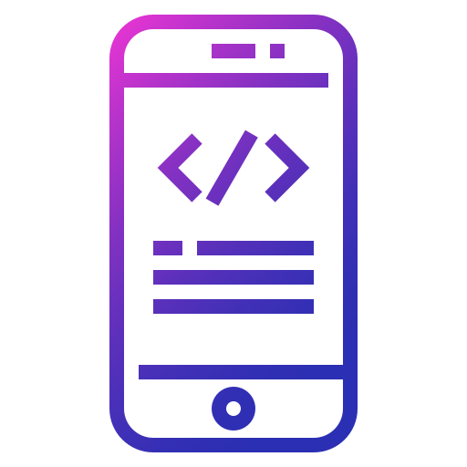

SKILLS
57 what are you qualified to be hired? According to recent reports 75% of HR professionals admit there is a shortage of skills in candidates for job openings. What do they mean by "skills," though? Skills are your natural talents and the expertise you develop to perform a task or a job. Life skills help you deal with daily tasks in all areas of life while professional skills allow you to perform specific work duties. There are several key types of skills: soft skills, hard skills, domain-general, and domain-specific skills. But how do you list skills on a resume to land that interview? Don’t worry, in a few minutes, you’ll learn exactly what to do. Want to save time and have your resume ready in 5 minutes? Try our resume builder. It’s fast and easy to use. Plus, you’ll get ready-made content to add with one click. See 20+ resume templates and create your resume here.
This article will show you: Examples of 99+ best skills to put on a resume for all types of jobs. What skills to include on a resume to get more interviews for great positions. Where to put work skills on a resume so that recruiters actually believe you. How to write about key skills on a resume.

WEB DEVELOPMENT
Web development refers to the building, creating, and maintaining of websites. It includes aspects such as web design, web publishing, web programming, and database management. It is the creation of an application that works over the internet i.e. websites.

App-DEVELOPMENT
Forbes is right on the money. Mobile is indeed the future of everything, from business and healthcare app development to gaming and all-things good in between. And industry by industry insights and overall usage numbers agree. Mobile app development refers to the process of writing software that works on a mobile device (smartphones, tables, wearable). But app development is not only about coding a native, HTML5 or hybrid app. It is about the strategic process of defining, designing, building and launching a successful mobile product. In this article, based on our experience in building mobile apps for over ten years, you will learn everything we know about mobile app development. We take you through every step of building a great mobile product: from ideation to market validation, persona definition to creating beautiful designs, creating a robust development architecture and writing clean code, followed by how you build a marketing plan to hit the ground running the day your app is published on the App Store. But most importantly, read this article to learn from the mistakes of many app builders, investors and entrepreneurs. Building a great app isn’t cheap. We’ve seen people waste millions, literally, on building bad products or launching poorly designed apps. Don’t be that person. Take the time to read this article, beginning to end, to make sure you build the best possible app that will do justice to your amazing idea..

Coding-LANGUAGES
The Master of Science in Computer Science Align program at Northeastern University is specifically designed for students who want to transition into computer science from another field of study. “Our aim is to transport students from a variety of different backgrounds and have them come out as software engineers,” says Ian Gorton, PhD and director of the graduate computer science programs at Northeastern University—Seattle. “We focus on math, programming, and a variety of computer science and engineering concepts. ”